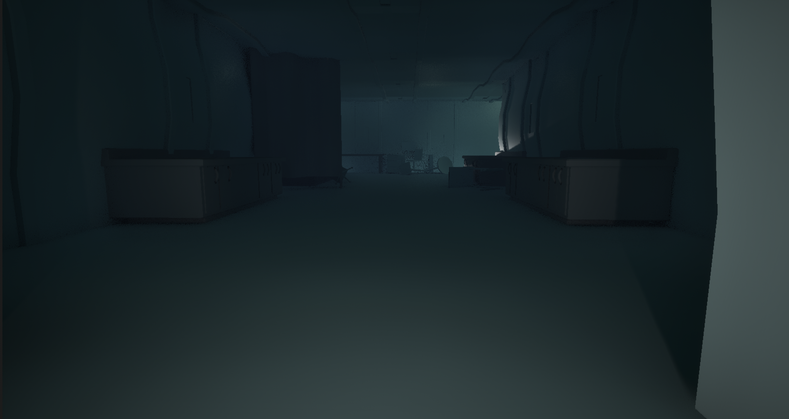
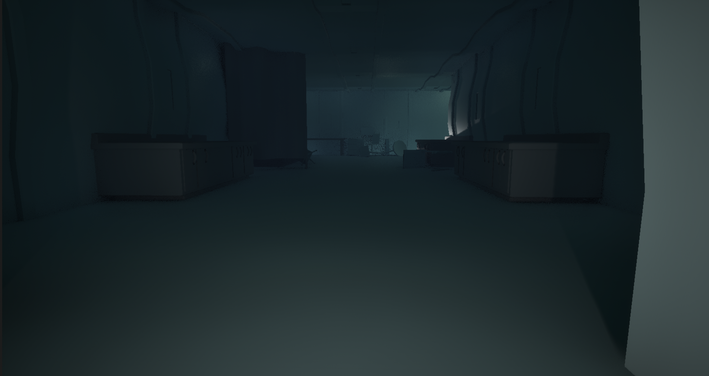

Tuesday, April 15, 2025: Protocol ALPHA Lockdown
CREEP interns, the worse situation has happened. Subject Echo and Subject Radiant have escaped their containment and are rampaging through the bottom floors of the lab.
I am currently writing this to you from a secure second location on a higher level of the facility with access to the camera system. If you are reading this and are still on the bottom floor, by God, I wish you well.
We have officially initiated Protocol ALPHA Lockdown, wherein the test labs are completely isolated and closed off to anyone inside or outside. This means you are now within the Subject's grasp, angry and hungry, you are no longer safe.

Hope is not lost, however. There is an elevator at the far end of the hall that can be opened with four CREEP Scientist Keycards. As you are an intern, you should have one near you at all times, find three more survivors, or their corpses, and you should be in the clear.
Be quick, be quiet. The best thing we can recommend is remember the simulations. Subject Echo is attracted to the faintest sound, if you jump he will hear you and run directly to that sound. But remember, his eyesight is poor. Use the various objects you find down there and throw them to distract him and sneak by.

Subject Radiant on the other hand is infatuated with light, so stay in darker areas and keep your flashlight off unless you absolutely need it.

The halls are fairly cluttered, so you should be able to find places to hide and sneak around, just remember, this is no longer a simulation. Any wrong step will lead to your death.
 

As a final note, Subject Change has also escaped, and unlike their brethren, they seem to be in complete control of their mind and are looking for away out.
With them being in control of their mind, and their unique camouflaging ability, they can easily hide away and slip out if they reach the elevator. We can't let them be public knowledge, which is why if you see them, it's your responsibility to stop them.
Be wary, they can do anything you can do: throw objects, hide, even collect keycards and use them.
Added to that, they have unique adaptations like camouflaging and eyes that can light the way for them.
Intern, in order to catch them and survive, you'll have to work hard and be brave. But hey, after this, you'll find your promotion with us at CREEP. We thank you for your service, and wish you the best of luck. We'll be watching.
-CREEP Head Scientists